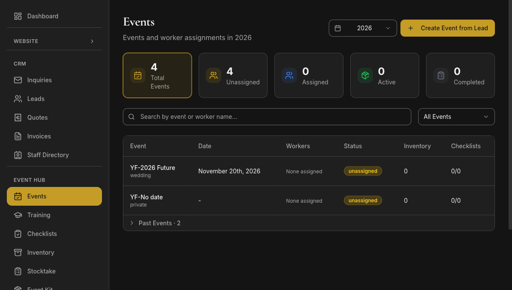

Case study · ByJoseM, Ireland
A bartending business its owner runs by talking to it.
34
tools in the owner's own
ChatGPT, since 18 Oct 2026
134
pull requests merged,
April to November 2026
638
unit tests on money,
pricing and stock
Built by Diego Bauer with Claude Code. Screens use demo data.

github.com/AIwithDiego/byjosem-case-study